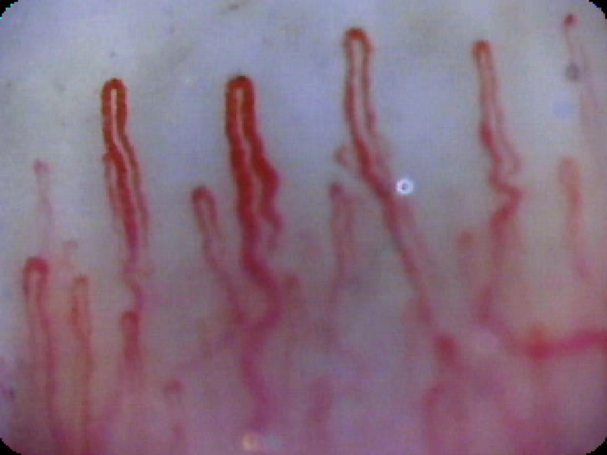

앱 화면 2
앱 화면 3
갑자기 쓰러진 뒤에야 혈압과 맥박이 달라집니다. 사건 뒤에 움직이는 후행 지표입니다. 말초 모세혈관은 쓰러지기 전에 먼저 신호를 보내는 선행 지표입니다. 손톱주름은 이 모세혈관을 피부를 절개하지 않고 그대로 볼 수 있는 유일한 부위라 '인체의 생체창'이라 불립니다. 영양제 섭취나 생활습관 교정의 효과도 이곳에 가장 먼저 나타납니다.
전신 혈관망의 80~95%를 차지하는 미세순환을 직접 관찰
관리 효과 확인까지 체성분은 최소 3개월, 모세혈관은 4~8주
진행 순서
- 01촬영 · 분석손톱에 오일을 바르고 전용 기기에 올려 초점을 맞추면 200배율 광학계가 손톱주름 모세혈관을 비침습으로 촬영합니다. 모세혈관 루프를 하나씩 찾아 굵기와 형태를 µm 단위로 잰 뒤 5대 지표로 점수화합니다.
- 02생활습관 문진식습관 · 신체활동 · 수면 · 심리 · 음주 · 흡연 여섯 영역을 설문으로 기록해 100점으로 점수화합니다. 영역별 점수와 개선 가이드를 제공합니다.
- 03유형 · 코칭모세혈관 점수와 생활습관 점수를 교차해 9개 웰니스 유형 중 현재 위치를 판정하고 유형별 코칭을 제공합니다. 정기 측정이 쌓이면 시계열 궤적을 분석해 개선 반응에 맞춘 솔루션까지 제안합니다.